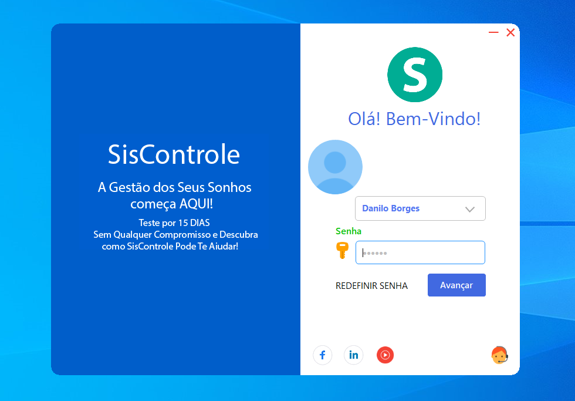

Sistema SisControle
Descrição do Projeto
O SisControle é um sistema ERP Desktop em desenvolvimento com a finalidade de ajudar pequenos e médios empreendedores no controle de estoque, fluxo de caixa, cadastro de clientes, cadastro de usuários. O SisControle vai permitir que o gestor faça um controle financeiro, pagamento de comissões, restrição de acessos e muito mais.
SisControle traz uma interface bonita e amigável que possibilita a usuários poucos experientes a econtrar a ferramenta que deseja. Os menus e submenus ficam todos no topo, alguns com teclas de atalho para facilitar e agilizar as opeções do dia dia do usuário.
O Sistema SisControle traz ao usuário uma experiência simples de utilização com telas cleans paradas por um fluxo, ou seja, após realizar o cadastro o usuário é direcionado para a tela principal contendo as informações mais relevantes. O Usuário poderá navegar entre elas sem se perder e mantendo a separação das informações.
Voltar ao Portifólio